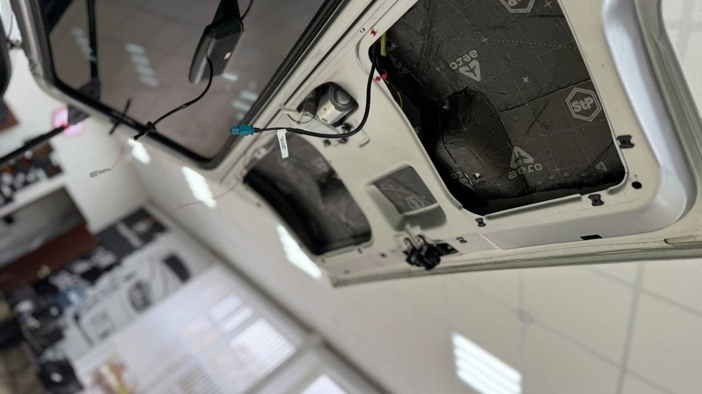
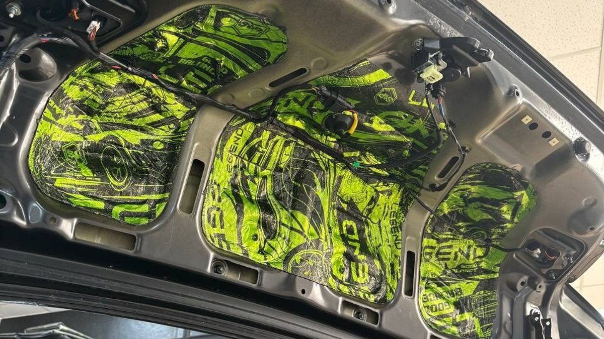

Суббота, парковка у гипермаркета, мокрый снег. В каждой руке по два пакета, под мышкой упаковка воды. Вы подходите к машине и понимаете, что сейчас придётся всё это ставить в слякоть, чтобы открыть багажник. Ручка крышки в серой корке из реагента. Открыли – на перчатке грязь. Закрываете – ладонью по такой же грязной кромке, а потом этой рукой держитесь за руль до самого дома.
Мелочь, да. Но зимой в Ярославле она повторяется каждую неделю, и к декабрю начинает раздражать больше, чем пробки на Октябрьском мосту.

Электропривод открывает и закрывает крышку багажника сам: с кнопки на брелоке, из салона или на самой крышке. Вы подходите с полными руками, багажник уже открыт. Закрыть можно кнопкой, не касаясь грязного металла. В пальто и светлой куртке это особенно чувствуется.
Есть и менее очевидная польза – защита от случайного закрытия. Крышка не захлопнется от порыва ветра, пока вы загружаете вещи или наклонились внутрь. Тот, кто хоть раз получал крышкой по голове на открытой парковке, оценит.
И ещё одна вещь, о которой вспоминают не сразу. Тяжёлую крышку большого кроссовера не каждому удобно тянуть вниз: детям, пожилым родителям, да и вам самим, когда в одной руке телефон, а другой держите за руку ребёнка. С приводом багажник перестаёт быть отдельной задачей.

Тем, кто возит много и часто. Семьям, где в багажнике то коляска, то санки, то сумки с продуктами на неделю. Тем, кто ездит за покупками один и всегда с занятыми руками.
Невысоким людям на больших машинах, у которых до открытой крышки кроссовера не дотянуться без прыжка. Привод закроет её сам, и не нужно хвататься за край.
Тем, кто не любит пачкаться и ездит в светлой одежде. Зимой багажник почти всегда грязный, и это не исправит никакая мойка: через день после неё всё по-старому.
Если вы открываете багажник раз в месяц, а в остальное время машина возит только вас и рюкзак, привод будет приятной игрушкой, а не решением проблемы. Если машина небольшая и крышка лёгкая, вы, возможно, и не заметите большой разницы. В этом случае деньги разумнее отдать на то, что мешает каждый день: на камеру заднего вида, если двор тесный, или на регистратор, если его до сих пор нет.
И если у вас низкий гараж или паркинг с низким потолком, нужно заранее обсудить, можно ли ограничить высоту открытия. Во многих системах это настраивается, но лучше спросить до установки, а не узнать об этом по звуку крышки о потолок.
Посчитайте, сколько раз за последнюю неделю вы открывали багажник с занятыми руками. Если больше двух – привод уже окупает себя удобством. Посмотрите, где вы паркуетесь: открытая стоянка, двор, подземный паркинг. Подумайте, кто ещё в семье ездит на этой машине и как им будет удобнее открывать – с брелока или кнопкой. С этими ответами разговор у мастера займёт пять минут, и вы получите систему, которая подходит вам, а не просто «как у всех».
Мы в Ярославле – студия «Автостиль», проспект Октября, 82б. Ставим электроприводы багажника, а ещё доводчики дверей, камеры и парктроники. На все работы и оборудование – гарантия. Подробнее – на странице про дополнительное оборудование, телефон +7 902 220-75-55.